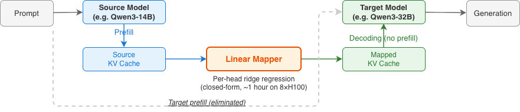
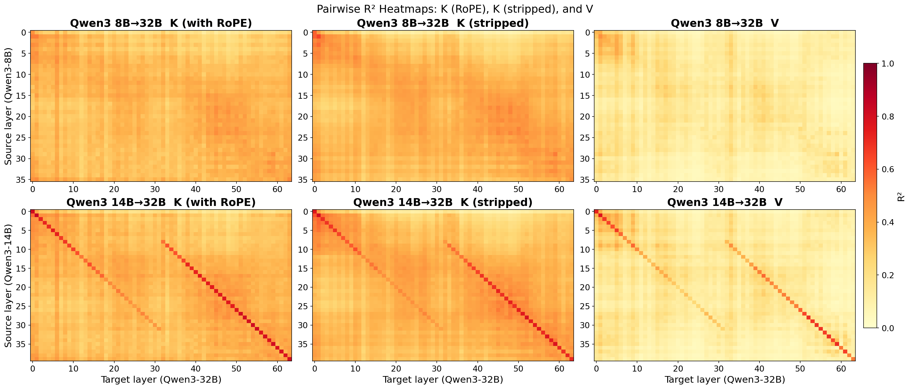
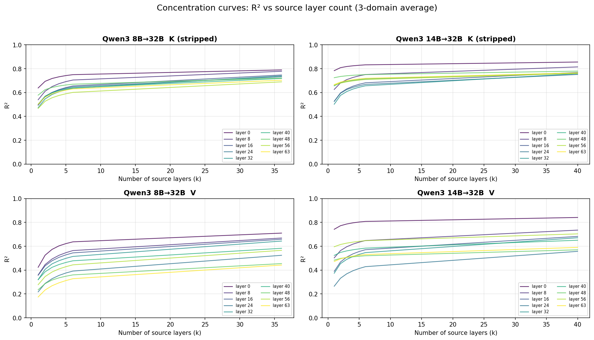
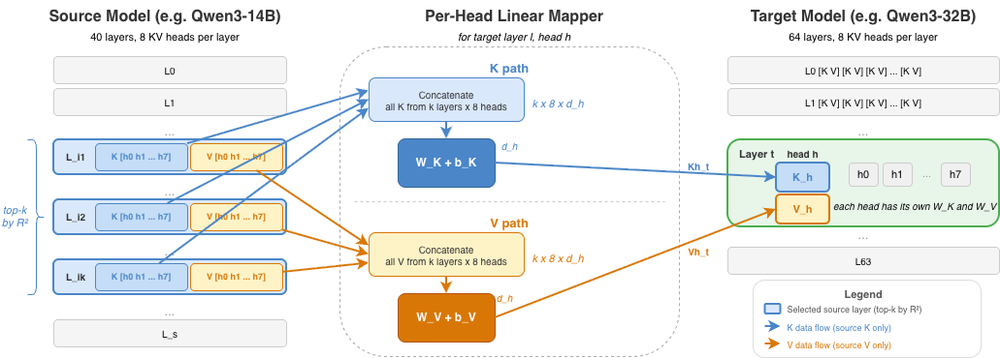

生产部署中，为了成本-质量级联、会话中切换和路由，经常在模型家族的不同尺寸模型之间切换，而每次切换都迫使接收方从头重新执行prefill。我们提出跨模型KV缓存迁移，接收方复用源模型的KV缓存，跳过prefill。我们发现，在匹配的KV对上（源模型和目标模型共享KV头数量和每头维度），跨模型KV具有显著的线性结构。在Qwen3 14B→32B上，单个源层解释了目标keys方差的56% 和values方差的32%，多个源层则提升到79% 和65%。基于此，我们设计了一个闭式岭回归映射器，按头操作，分三步进行。首先，对每个目标层，我们选择最具预测性的top-k个源层，并将它们的KV拼接作为输入。其次，我们在映射前去除keys上的RoPE，使拟合与位置无关，可跨上下文长度复用。第三，我们在500条FineWeb-Edu序列（每条1,024 tokens）的小型校准集上拟合岭回归。令人惊讶的是，在三个家族的六对模型上，这个线性映射器在四对上保留了接收方独立prefill准确率的73–98%，而两对急剧下降。一个非线性MLP在这些失败案例上恢复了高达 +37个百分点（pp）的HellaSwag保留率。该映射器比重新prefill快2.7–25倍，并且在多轮交接中保持稳定，使跨模型KV缓存迁移变得实用。
生产环境中的LLM（大语言模型）服务日益涉及长时Agentic（智能体原生）会话，上下文在多轮中不断累积。它还依赖多模型编排来实现成本-质量级联、会话中切换和路由（OpenAI, 2025）。这些做法会在模型家族不同尺寸的成员之间切换（Yang et al., 2025; Grattafiori et al., 2024）。家族成员共享核心架构选择和大量预训练数据，但在不同规模下，架构细节和训练方案有所差异。这两种趋势都加剧了prefill成本。长会话拉长了prompt，而每次模型切换都会在接收方对累积的上下文重新执行prefill。Prefill是生成前填充KV缓存的前向传播，其成本与模型大小和prompt长度成正比。前缀缓存仅在同一模型内缓解这一问题。
由于prefill的输出是KV缓存，跨模型复用它就归结为一个表示问题：将一个模型的KV缓存转换为另一个模型期望的格式。我们将此称为跨模型KV缓存迁移，并将本研究限制在族内迁移。该映射是双向的。小模型到大模型的迁移提升质量，大模型到小模型则降低成本。图1展示了这一流程。该流程推广了模型内KV复用。跨层共享（Brandon et al., 2024; Wu and Tu, 2024; Chang et al., 2025）利用了模型内部的冗余，而前缀缓存（Zheng et al., 2024; Gim et al., 2024）在同一模型的多个请求间复用KV。跨模型KV缓存迁移将一个模型的缓存值映射到另一个模型。
生产环境中的LLM（大语言模型）服务日益涉及长时Agentic（智能体原生）会话，上下文在多轮中不断累积。它还依赖多模型编排来实现成本-质量级联、会话中切换和路由（OpenAI, 2025）。这些做法会在模型家族不同尺寸的成员之间切换（Yang et al., 2025; Grattafiori et al., 2024）。家族成员共享核心架构选择和大量预训练数据，但在不同规模下，架构细节和训练方案有所差异。这两种趋势都加剧了prefill成本。长会话拉长了prompt，而每次模型切换都会在接收方对累积的上下文重新执行prefill。Prefill是生成前填充KV缓存的前向传播，其成本与模型大小和prompt长度成正比。前缀缓存仅在同一模型内缓解这一问题。
由于prefill的输出是KV缓存，跨模型复用它就归结为一个表示问题：将一个模型的KV缓存转换为另一个模型期望的格式。我们将此称为跨模型KV缓存迁移，并将本研究限制在族内迁移。该映射是双向的。小模型到大模型的迁移提升质量，大模型到小模型则降低成本。图1展示了这一流程。该流程推广了模型内KV复用。跨层共享（Brandon et al., 2024; Wu and Tu, 2024; Chang et al., 2025）利用了模型内部的冗余，而前缀缓存（Zheng et al., 2024; Gim et al., 2024）在同一模型的多个请求间复用KV。跨模型KV缓存迁移将一个模型的缓存值映射到另一个模型。

跨模型KV缓存迁移具有挑战性，因为源模型和目标模型在层数、隐藏维度和KV头配置上可能不同。先前工作通过神经融合器（Fu et al., 2026）、学习到的潜空间适配器（Dery et al., 2026）、注意力模式映射（Zhao et al., 2025）或同架构KV共享（Liu et al., 2026）来弥合这些差距，这些方法都需要基于梯度的训练或较强的架构假设（§2.2）。
在本研究中，我们展示了跨模型KV关系具有显著的线性结构，允许小样本、无需梯度的拟合。在Qwen3 14B→32B上，单个源层解释了目标键中56% 的方差和值中32% 的方差，使用多个源层时提升至79% 和65%（§2.3）。基于这一观察，我们提出了一种闭式逐头岭回归映射器（§3），它结合了三个组件：从小校准集拟合的逐头岭回归、跨层源选择（每个目标层从其预测性最强的top-k个源层中选取）、以及内容空间（去除RoPE）映射，将位置旋转与语义内容解耦，从而使拟合能够跨上下文长度迁移。
在来自三个家族的六对匹配KV对中，源模型和目标模型共享KV头数和每头维度（§4.2），线性映射器在最佳对上平均保留了五个基准中独立模型精度的73–98%。我们进一步发现，决定每对保留率的是误差位置而非误差幅度。非线性MLP将残差误差从注意力敏感子空间重新分配，在较难的对上使HellaSwag保留率最多提高 +37个百分点（§4.4）。在来自三个家族的12对匹配KV对评估中，注意力输出相似度与HellaSwag保留率的Pearson相关系数为r=+0.57，且优于R²（§4.5）。
(1) 闭式映射框架。我们提出一种基于逐头岭回归的无梯度跨模型KV缓存迁移框架。两个核心设计选择是：每个目标层由其top-\(k\)个最具预测性的源层拟合，且键在去除RoPE的内容空间中映射，从而使拟合结果可跨上下文长度迁移(§3)。(2) 多家族验证。我们在三个家族的六组匹配KV对上验证了该框架。在小到大的方向上，其中四组对在五个基准上保持了独立精度的73–98%，同时预填充延迟比重新预填充低2.7–25\(\times\)(§4.7)。(3) 非线性扩展。在更难的Ministral对上，非线性MLP通过将残差误差从注意力敏感子空间重新分配，使HellaSwag保留率提升高达\(+37\)个百分点(§4.4, §4.5)。(4) 注意力输出余弦可预测跨对保留率。在来自三个家族的12组匹配KV对评估中，注意力输出余弦与HellaSwag保留率的Pearson相关系数为\(r{=}{+}0.57\)，优于\(R^{2}\)(\(r{=}{-}0.20\))。同样的集中度分析将MLP的\(+37\)个百分点提升解释为误差向注意力无关方向的重新分配(§4.5)。
2.1问题定义
考虑一个源模型 \(\mathcal{S}\)，具有 \(L_{s}\) 层，以及一个目标模型 \(\mathcal{T}\)，具有 \(L_{t}\) 层。两者均使用分组查询注意力，KV头数分别为 \(n_{\text{kv}}^{s}\) 和 \(n_{\text{kv}}^{t}\)，维度分别为 \(d_{h}^{s}\) 和 \(d_{h}^{t}\)。对于长度为 \(T\) 的输入序列 \(\mathbf{x}=(x_{1},\ldots,x_{T})\)，源模型的第 \(l\in\{1,\ldots,L_{s}\}\) 层、第 \(h\in\{1,\ldots,n_{\text{kv}}^{s}\}\) 个头产生键和值 \(\mathbf{K}_{s}^{l,h},\mathbf{V}_{s}^{l,h}\in\mathbb{R}^{T\times d_{h}^{s}}\)。我们用 \(\mathcal{C}_{\mathcal{S}}\) 表示源模型所有层和头的完整KV缓存，\(\mathcal{C}_{\mathcal{T}}\) 类似地表示目标模型的KV缓存。源模型和目标模型在同一家族内共享分词器，因此输入序列对两者具有相同的长度 \(T\)。当 \(n_{\text{kv}}^{s}=n_{\text{kv}}^{t}\) 且 \(d_{h}^{s}=d_{h}^{t}\) 时，我们称迁移对具有匹配的KV，即使 \(L_{s}\)、\(L_{t}\) 或参数数量在不同规模下有所不同。
我们寻求一个映射 \(f\colon\mathcal{C}_{\mathcal{S}}\to\hat{\mathcal{C}}_{\mathcal{T}}\)，使得目标模型在用 \(\hat{\mathcal{C}}_{\mathcal{T}}\) 替代其自身的 \(\mathcal{C}_{\mathcal{T}}\) 进行解码时，产生等效的输出：
对于具有度量 \(m\) 的下游任务 \(\tau\)，我们使用目标模型的下游准确率来衡量迁移质量，而不仅仅依赖重建度量。我们将 \(f\) 分解为逐头映射 \(f_{K}^{l,h}\) 和 \(f_{V}^{l,h}\)，为目标的每一层和每个头生成键和值。
2.2已有方法
现有的跨模型KV复用方法均需要基于梯度的训练或架构约束。C2C (Fu et al., 2026) 训练每对神经融合器。LatentAlign (Dery et al., 2026) 学习每种模型的适配器，映射到共享潜空间。IAM (Zhao et al., 2025) 替代小模型的注意力模式，而非KV值。DroidSpeak (Liu et al., 2026) 要求架构完全相同。其他训练时方法 (Woo et al., 2026b, a) 也具有相同的基于梯度的约束。据我们所知，尚无研究探讨跨模型KV关系是否简单到足以支持闭式、无需训练的映射。三条正交的研究线与本文工作互补：模型内跨层KV复用 (Brandon et al., 2024; Wu and Tu, 2024; Chang et al., 2025)、预填充加速 (Liu et al., 2025; Upasani et al., 2026; Qiao et al., 2025)、以及跨LLM线性表征对齐 (Huh et al., 2024; Chen et al., 2025; Bello et al., 2025; Huang et al., 2025)。表6（附录A）总结了跨模型对比。
2.3跨模型KV的线性结构

在确定映射器架构之前，我们先探讨跨模型KV关系具有何种结构。我们在Qwen3上分析该结构。线性结构的结果可推广到其他匹配的KV对。我们探测三种缓存类型。\(K_{\text{rope}}\) 表示模型实际使用的键。\(K_{\text{stripped}}\) 表示通过 \(\mathbf{R}_{\Theta}^{-1}\) 去除位置相关RoPE旋转后的键。\(V\) 表示值，不携带位置编码。对于每种缓存类型 \(C\in\{K_{\text{rope}},K_{\text{stripped}},V\}\) 以及每个三元组（源层 \(l^{\prime}\in\{1,\ldots,L_{s}\}\)、目标层 \(l\in\{1,\ldots,L_{t}\}\)、头 \(h\)），我们在token级别拟合单源普通最小二乘回归。从FineWeb-Edu序列中二次采样的 \(N\) 个校准token各贡献一个观测，将源的逐token特征向量 \(C_{s}^{l^{\prime},h}\in\mathbb{R}^{d_{h}^{s}}\) 映射到目标的 \(C_{t}^{l,h}\in\mathbb{R}^{d_{h}^{t}}\)，
将 \(C_{s}^{l^{\prime},h}\) 视为行向量，以匹配生产映射器的约定。这是针对每个（三元组、缓存类型）的探测，而非生产映射器：后者会拼接多个源层并添加岭正则化。我们用决定系数 \(R^{2}\) 衡量拟合质量，并对 \(n_{\text{kv}}^{t}\) 个目标头取平均，得到每个 \((l^{\prime},l)\) 对的头平均 \(R^{2}\)。将该结果可视化为热图（行索引源层，列索引目标层，见图2），可揭示四种定性模式。每对的具体量化数值已另行报告。
(1) 高线性拟合：在最可预测的目标层上，单一线性回归已能捕获跨模型KV方差的很大一部分。沿对角线，头平均 \(R^{2}\) 远高于零；在热力图峰值处，最优单一源–目标单元在Qwen3 14B\(\to\)32B上达到 \(K_{\text{stripped}}\) \(R^{2}{=}0.81\)，在较弱的8B\(\to\)32B上达到0.65。(2) 模型越接近，对角线越清晰：较大的架构和深度差距会使模式弥散。(3) RoPE会污染拟合效果：去除RoPE通常会使对角线更清晰，这促使我们进行位置–内容分解。(4) K比V更可预测：头平均 \(R^{2}\) 通常存在约0.2的差距。
该探针使用单一源层。我们通过贪心前向选择对其扩展，迭代添加使 \(R^{2}\) 增幅最大的源层。互补信息分布在多个源层中。在Qwen3 14B\(\to\)32B上，对于 \(K_{\text{stripped}}\)，\(k{=}1\) 仅达到 \(k{=}\text{all}\) \(R^{2}\) 的66%；对于V则为42%。增益最大的阶段是 \(k{=}1\) 到 \(k{=}4\)，到 \(k{=}6\) 时 \(R^{2}\) 已接近 \(k{=}\text{all}\) 值。这为top-k选择提供了依据。
图3展示了针对单个目标（层 \(l\)、头 \(h\)）对的映射器。按 \(R^{2}\) 为每个目标层选择top-k源层子集，将选中的源key和value拼接，再由独立的岭回归 \(\mathbf{W}_{K}\)、\(\mathbf{W}_{V}\) 将其映射到目标。每个映射器是一个闭式线性求解，对所有 \(L_{t}\times n_{\text{kv}}^{t}\) 个目标头独立重复。该映射器包含三个组件：逐头岭回归、跨层源选择、内容空间映射。
3.1逐头岭回归
源模型与目标模型在层数 (\(L_{s}\neq L_{t}\))、头维度 (\(d_{h}^{s}\neq d_{h}^{t}\)) 以及可能的KV头数量 (\(n_{\text{kv}}^{s}\neq n_{\text{kv}}^{t}\)) 上存在差异。我们通过为每个目标（层、头）拟合独立的线性映射来解决这一问题：
其中 \(\mathbf{X}_{K}^{l}\) 拼接来自 \(k\) 个选定源层（§3.2）的源key特征，\(\mathbf{W}_{K}^{l,h}\in\mathbb{R}^{(k\cdot n_{\text{kv}}^{s}\cdot d_{h}^{s})\times d_{h}^{t}}\) 为权重矩阵。

将 \(N\) 个校准token堆叠起来，得到设计矩阵 \(\mathbf{X}\in\mathbb{R}^{N\times(k\,n_{\text{kv}}^{s}\,d_{h}^{s})}\) 和响应矩阵 \(\mathbf{Y}\in\mathbb{R}^{N\times d_{h}^{t}}\)。我们使用 \(\lambda=0.01\) 的ridge（岭回归）而非纯OLS，以保证数值条件。当 \(k\) 较大时，特征维度可达数万，且选出的top-\(k\) 个源层按构造方式具有相关性，因此 \(\mathbf{X}^{\top}\mathbf{X}\) 近似奇异。Tikhonov项使求逆稳定，且拟合偏差可忽略。闭式解为
求解前，我们对 \(\mathbf{X}\) 和 \(\mathbf{Y}\) 进行中心化，因此上述 \(\mathbf{W}^{*}\) 估计斜率，而式3中的偏置通过 \(\mathbf{b}=\bar{\mathbf{Y}}-\bar{\mathbf{X}}\mathbf{W}^{*}\) 恢复。校准数据由500条长度为1024的FineWeb-Edu序列组成，以stride-4进行子采样后，每个目标头对应约 \(N\approx 128\)K个token。总映射器大小（K加V）为 \(2\,L_{t}\,n_{\text{kv}}^{t}\,(k\,n_{\text{kv}}^{s}\,d_{h}^{s})\,d_{h}^{t}\)，每对大小见附录D。在单个 \(8\times\)H100节点上，每对拟合约需47–87分钟，且无需基于梯度的训练。拟合时间相对于目标头数呈次线性增长，因为构造 \(\mathbf{X}^{\top}\mathbf{X}\)（复杂度 \(\mathcal{O}(Nd_{s}^{2})\)，其中 \(d_{s}=k\,n_{\text{kv}}^{s}\,d_{h}^{s}\) 为源特征维度）主导实际耗时，并且每个目标层只计算一次，在该层所有头之间共享。每对拟合时间见附录E。
3.2跨层源选择
源模型与目标模型的层数不同，因此需要确定哪些源层应为每个目标层的映射提供信息。§2.3表明，对于给定的目标层，并非所有源层都具有同等信息量。因此，针对每个目标层 \(l\)，我们按去除RoPE后的键和值的头部平均 \(R^{2}\) 选取前 \(k\) 个源层，拼接它们的KV特征，并拟合 §3.1中的多源岭回归：
其中 \(\bar{\mathbf{K}}_{s}^{l_{i}}\in\mathbb{R}^{T\times(n_{\text{kv}}^{s}\cdot d_{h}^{s})}\) 是源层 \(l_{i}\) 所有Key头的拼接结果，\(\{l_{1},\ldots,l_{k}\}\) 是目标层 \(l\) 的前 \(k\) 个源层。\(\mathbf{X}_{V}^{l}\) 由Value头类似地构造。目标层内的所有头共享相同的选定源层，从而实现跨头信息流动。源层数量 \(k\) 是超参数，通过扫描为每对模型单独选择（§4.1）。跨层源选择是三个映射组件中贡献最大的单一组件（§4.3）。
3.3内容空间映射（RoPE分解）
标准RoPE（Su et al., 2024）对查询和键施加与位置相关的旋转。KV缓存只存储旋转后的键 \(\mathbf{k}_{\text{RoPE}}(t)=\mathbf{R}_{\Theta}(t)\,\mathbf{k}_{\text{content}}\)，而查询在解码时重新计算。将RoPE与内容解耦使映射管线模块化。每个头的ridge权重在无位置空间中计算，因此它们在不同RoPE配置的配对之间以及目标RoPE支持的任何位置上都保持有效。直接将映射器拟合到RoPE耦合的键上在短上下文基准上也能在噪声范围内工作（表2），但会将权重绑定到拟合时看到的1024 token位置分布上。解耦形式从构造上扩展到更长的上下文，这对服务长达32k token的提示很重要（§4.7）。
具体来说，我们剥离源RoPE，在无位置空间中应用 \(\mathbf{W}_{K}\)，并用目标RoPE重新编码：\(\hat{\mathbf{K}}_{t}=(\mathbf{K}_{s}\,\mathbf{R}_{\Theta_{s}}^{-1}(t)\,\mathbf{W}_{K}+\mathbf{b}_{K})\,\mathbf{R}_{\Theta_{t}}(t)\)。在校准期间，回归目标 \(\mathbf{Y}\) 通过从目标真值键中剥离目标RoPE来构建，因此 \(\mathbf{W}_{K}\) 完全在无位置空间中拟合。由于 \(\mathbf{R}_{\Theta}\) 是正交的，求逆在可忽略的开销下是精确的。值不携带位置编码，直接映射。
我们评估四个问题：(1) ridge在三个家族上对目标自身的KV匹配得如何（§4.2）？(2) 哪些组件重要（§4.3）？(3) 非线性映射器能否恢复ridge表现不佳的配对（§4.4），以及什么决定了每对配对的结果（§4.5）？(4) 迁移在多轮中是否成立（§4.6），延迟优势是什么（§4.7）？
4.1实验设置
我们评估三个匹配KV的模型系列（Qwen3、Llama 3.1、Ministral 3），其中源模型和目标模型在不同规模下共享KV头数和每头维度（完整表格见附录D）。所有系列均使用密集全注意力，因此每个目标层都接收映射后的KV。模型为后训练（Qwen3、Ministral 3）或基础（Llama 3.1）模型，以补全模式评估。
我们在五个准确率基准外加WikiText-2困惑度上进行评估：ARC-Challenge (Clark et al., 2018)、HellaSwag (Zellers et al., 2019)、WinoGrande (Sakaguchi et al., 2020)、MMLU 5-shot (Hendrycks et al., 2021)、GSM8K 8-shot with chain-of-thought prompting (Cobbe et al., 2021; Wei et al., 2022)，以及前缀条件下的WikiText-2困惑度。CoQA (Reddy et al., 2019) 衡量多轮交接（§4.6）。所有五个准确率基准都在全部六对模型上、以每对选定的 \\(k\\) 进行评估。困惑度覆盖范围及其协议见附录D。保留率为 \\((\\text{transfer accuracy})/(\\text{target standalone accuracy})\\times 100\\%\\)。各基准的随机水平不同，因此我们还报告随机水平归一化保留率 \\((\\text{acc}-\\text{chance})/(\\text{target}-\\text{chance})\\)，该指标在每个基准上将随机水平置为0%、目标自身准确率置为100%。
所有配对均使用岭回归（\\(\\lambda=0.01\\)）和内容空间映射。源层数 \\(k\\) 在 \\((\\{1,2,4,6,8,10,12,16,20,24,\\text{all}\\})\\) 中扫描。我们为每对选择一个 \\(k\\)，即最大化对数似然基准准确率（ARC-C、HellaSwag、WinoGrande、MMLU）算术平均值的值；若接近平局则偏向更大的 \\(k\\) 以扩大评估覆盖。GSM8K、CoQA多轮和prefill延迟不参与该选择。将某个基准纳入选择标准最多会使其自身报告的准确率提高 \\(2.49\\) 个百分点（附录H）。每对选定的 \\(k\\)、映射器总参数（1.01–3.36 B）、存储（4–12 GB）及家族表见附录D。
4.2主要结果
主要结果聚焦于三个家族中六对matched-KV的小到大（S\\(\\to\\)L）迁移。大到小（L\\(\\to\\)S）评估仅限于HellaSwag，出现在机制分析（§4.5）和多轮评估（§4.6）中。所有配对均使用完整流程、以各自选定的 \\(k\\) 进行评估。结果差异很大（42–98% 平均保留率）。表1报告每对的关键数字。按家族的完整表格见附录F。
■ 表1：在选定的 \(k\)（岭回归，内容空间）下，来自三个系列的六对匹配KV对的逐对迁移保留率。每个基准列显示保留率，每个基准的随机猜测基线在第一行。Avg和Avg\({}_{\text{fn}}\) 分别是这些基准上的保留率均值与基线归一化保留率均值，由未取整的值计算。各基准的基线归一化值见附录F。家族 配对 (\(k\)) Avg Avg\({}_{\text{fn}}\) ARC-C HellaSwag WinoGrande MMLU GSM8K随机猜测基线 ： ： 25% 25% 50% 25% \(\approx\)0% Qwen3 14B\(\to\)32B (8) 97.6% 96.3% 101.0% 97.6% 98.5% 95.0% 95.6% Qwen3 8B\(\to\)32B (12) 87.5% 80.7% 94.0% 95.2% 91.0% 88.5% 68.8% Llama 3.1 8B\(\to\)70B (20) 72.8% 62.9% 90.9% 94.4% 87.1% 73.3% 18.2% Ministral 3 3B\(\to\)8B (all) 76.2% 65.9% 90.6% 93.3% 91.3% 69.4% 36.6% Ministral 3 3B\(\to\)14B (20) 44.2% 14.7% 43.6% 68.0% 74.0% 32.0% 3.2% Ministral 3 8B\(\to\)14B (12) 41.6% 11.1% 40.7% 58.7% 74.2% 32.7% 1.6%
两个观察结果构成了本文其余部分的结构。(1) 层级1：四对匹配KV对在五个基准上的平均目标精度保留率为 \(73\)–\(98\%\)：Qwen3 14B\(\to\)32B、Qwen3 8B\(\to\)32B、Llama 3.1 8B\(\to\)70B（我们评估中参数比最极端的配对）以及Ministral 3B\(\to\)8B。(2) 层级2：两对匹配KV对性能急剧下降：Ministral 8B\(\to\)14B和Ministral 3B\(\to\)14B的Avg降至42–44%，基线归一化后降至11–15%。两个层级共同表明，匹配的KV与成功相关，但并不保证成功。§4.4和 §4.5研究哪些额外因素决定了每对配对的结果。图8（附录F）可视化了各基准上的保留率。
4.3消融实验
■ 表2：Qwen3 14B\(\to\)32B上的映射器组件消融。单元格为各基准的精度，最右侧列为WikiText-2困惑度。“Full”使用 \(k{=}8\)、岭回归和内容空间（去除RoPE）映射。“\(-\) inference RoPE”在推理时不重新旋转而应用内容空间拟合，造成拟合与评估不匹配。“\(-\) all RoPE”是完全耦合变体（拟合和推理时均保留RoPE）。最后两行额外移除了跨层源选择（\(k{=}1\)）和岭正则化。配置ARC-C HellaSwag WinoGrande MMLU GSM8K PPL Full（\(k{=}8\)，岭回归，内容空间） 61.60 80.70 68.98 78.09 90.98 7.33 \(-\) inference RoPE 44.97 75.39 56.59 25.79 4.17 7.70 \(-\) all RoPE（拟合 + 推理） 61.09 80.73 68.59 77.70 90.98 7.35 \(-\) RoPE \(-\) 跨层（\(k{=}1\)） 27.65 44.81 51.78 26.07 0.38 22.73 \(-\) RoPE \(-\) 跨层 \(-\) 岭回归36.43 62.26 51.22 51.26 1.44 9.86
我们在Qwen3 14B→32B这一保留率最高的配对（任何退化都最为明显）上刻画映射器。表2报告了组件消融实验，校准对λ、N和校准域的敏感性见附录C。
(1) 跨层源选择是最大贡献者。将k从8减至1会使K R²从0.79降至0.56（附录C）。(2) 内容空间映射具有基准特异性。禁用推理时RoPE处理会使MMLU和GSM8K跌至接近随机，而HellaSwag仅下降约5个百分点。(3) 校准具有鲁棒性。对λ进行四个数量级的扫描和对N进行50–1000序列扫描均显示宽广平坦区域，仅在λ=1时崩溃。样本数量在N=200后趋于平稳，N=50时仍与生产环境相差约1.6个百分点。校准域是唯一有实际代价的轴：CodeAlpaca在HellaSwag上下降5.24个百分点，而Wikipedia保持在噪声范围内。
4.4用MLP替代ridge
一个自然的问题是，非线性映射器能否在ridge失效的配对上恢复性能？我们采用与ridge相同的MSE损失，训练一个针对每个（目标层、注意力头、K\(|\)V）的MLP，并在推理时直接替换。该MLP包含两个1,024单元、ReLU激活的隐藏层，使用Adam训练（完整设置见附录E）。我们使用与ridge相同的下游评估流水线，评估了四个Qwen3与Ministral 3配对，其性能覆盖从成功到失败的范围，因此唯一变化的是映射器的函数形式。
表3给出两个观察结果。在ridge已成功的配对上，MLP略逊于ridge。在ridge失败的配对上，MLP将HellaSwag保持率提升了\(+24.3\)至\(+36.8\)个百分点，使全部四个配对在MLP下均超过\(90\%\)。当跨模型KV关系已经为线性时，线性ridge便已足够；MLP仅在ridge失效处提供帮助，而非全面超越ridge。
■ 表3：四个Qwen3和Ministral 3配对上的Ridge与MLP HellaSwag保持率。配对Ridge MLP \(\Delta\) Qwen3 14B\(\to\)32B 97.6% 97.3% \(-0.3\) pp Ministral 3B\(\to\)8B 93.3% 91.8% \(-1.5\) pp Ministral 3B\(\to\)14B 68.0% 92.3% \(\bm{+24.3}\) pp Ministral 8B\(\to\)14B 58.7% 95.5% \(\bm{+36.8}\) pp
在失败对上，ridge与MLP的差异是什么？在用于评估的HellaSwag token上，ridge的 \(R^{2}_{K}\) 严重为负（表4），意味着校准拟合的线性映射器无法外推。MLP弥补了大部分差距。校准 \(R^{2}\) 无法预测跨对的保留率，且这一增益与更低的误差集中度和更高的注意力输出余弦同时出现。
4.5什么决定迁移质量？
校准 \(R^{2}\) 是迁移质量天然的先验度量。如果它能预测保留率，部署筛选就可以只依赖拟合结果。然而，在我们双向评估的六组匹配KV对上，仅 \(R^{2}\) 并不能预测逐对结果。Llama 3.1 8B\(\to\)70B在校准数据上拟合ridge得到 \(R^{2}_{K}{=}0.84\)，小到大的HellaSwag保留率为94%，大到小却只有37%。Ministral 3B\(\to\)8B以同样的 \(R^{2}_{K}{=}0.84\) 拟合，两个方向都保留93%。相同的校准 \(R^{2}\) 带来了截然不同的下游结果。在ridge表现不足的对上，用MLP替换ridge可以恢复至多 \(+37\) 个百分点的下游性能。由此产生两个问题：哪种标量能跨对地比 \(R^{2}\) 更好地预测保留率？在失败对上，MLP与ridge的做法有何不同？
\(R^{2}\) 度量映射器在平均意义上重建每个K和V通道的紧密程度，对所有维度等权加权。注意力并非如此。它用目标的查询 \(\mathbf{Q}\) 对K评分，并按所得注意力模式对V加权。决定下游行为是否保留的关键量是目标本应计算出的注意力输出。我们直接测量映射KV与真实KV的注意力输出之间的余弦相似度，并在层和头上取平均。在来自三个模型家族的12项匹配KV对评估（六个S\(\to\)L和六个L\(\to\)S方向）中，平均余弦与HellaSwag保留率的Pearson相关系数为 \(r{=}{+}0.57\)，而校准域的 \(R^{2}_{K}\) 几乎没有相关（\(r{=}{-}0.20\)）。\(R^{2}\) 在单个对内部仍然有用，例如用于源层选择，但并非跨对的合适标量。
Cosine在pair级别上概括注意力保真度。为解释为何 \(R^{2}\) 相近的不同mapper产生不同的cosine，我们考察每个head上残差误差的落点。
我们按头度量错误集中度。对于K，将映射器每个token的K误差投影到目标每头查询矩阵 \(\mathbf{Q}_{h}\) 的右奇异向量上，并按匹配的奇异值平方对各分量加权。除以所有分量的平均误差，得到K集中度。对于V，按该位置的GT注意力权重平方对每个位置的V误差加权，再除以每位置的平均误差。两个量均在所有头上取平均。集中度高于1表示误差集中于注意力读取的位置，低于1表示误差落在注意力忽略的位置。
这解释了上一节的谜题，并阐明了非线性映射器的作用。我们在相同的四对组合、相同的校准数据下比较ridge与MLP，仅更换映射器。表4给出了每对组合的偏移。在ridge表现不足的组合上，MLP大幅降低K-concentration（平均 \\(\\Delta{\\approx}{-}2.5\\)），并提高attention-output cosine（\\(\\Delta{\\approx}{+}0.45\\)），HellaSwag保持率上升 \\(+24.3\\) 到 \\(+36.8\\) 个百分点。在ridge已成功的组合上，偏移要小得多，且保持率不随之变化：Ministral 3B\\(\\to\\)8B在两项指标上都有改善，但HellaSwag上仍然退步。因此，单纯重新分配误差并不足够。它只在错配误差大到足以产生约束时才改变下游准确率，这就是为什么在跨模型KV关系已经线性之处，线性ridge就已足够。同样的偏移在失败组合上将评估域 \\(R^{2}_{K}\\) 从深度负值提升至接近零，但仍低于零：ridge在校准域上的拟合无法外推到HellaSwag tokens，而MLP基本弥合了这一差距。
■ 表4：将ridge替换为MLP时每对组合的偏移（\\(\\Delta=\\text{MLP}-\\text{ridge}\\)，均在HellaSwag tokens上测量）。HS值为表3中的HellaSwag保持率。在失败组合上，ridge的 \\(R^{2}_{K}\\) 深度为负，表明校准拟合的线性映射器无法外推。在加粗的失败组合上，MLP将 \\(R^{2}_{K}\\) 提升至接近零，降低K-concentration，提高attention-output cosine，并恢复HellaSwag保持率。Pair Ridge \\(R^{2}_{K}\\) \\(\\Delta R^{2}_{K}\\) Ridge \\(R^{2}_{V}\\) \\(\\Delta R^{2}_{V}\\) Ridge HS \\(\\Delta\\) HS \\(\\Delta\\) K-conc \\(\\Delta\\) V-conc \\(\\Delta\\) cosine Qwen3 14B\\(\\to\\)32B 0.75 \\(-0.05\\) 0.56 \\(-0.06\\) 97.6% \\(-0.3\\) pp \\(-0.03\\) \\(+0.00\\) \\(-0.03\\) Ministral 3B\\(\\to\\)8B \\(-0.10\\) \\(+0.77\\) 0.59 \\(-0.09\\) 93.3% \\(-1.5\\) pp \\(-0.45\\) \\(-0.08\\) \\(+0.07\\) Ministral 3B\\(\\to\\)14B \\(\\bm{-7.81}\\) \\(\\bm{+7.62}\\) 0.17 \\(\\bm{+0.27}\\) 68.0% \\(\\bm{+24.3}\\) pp \\(\\bm{-2.31}\\) \\(\\bm{-0.23}\\) \\(\\bm{+0.41}\\) Ministral 8B\\(\\to\\)14B \\(\\bm{-3.22}\\) \\(\\bm{+3.08}\\) 0.19 \\(\\bm{+0.37}\\) 58.7% \\(\\bm{+36.8}\\) pp \\(\\bm{-2.71}\\) \\(\\bm{-0.23}\\) \\(\\bm{+0.48}\\)
4.6多轮切换
对话中途切换场景在多个回合中交替使用源模型和目标模型，因此我们在Qwen3 14B\\(\\leftrightarrow\\)32B上用CoQA（Reddy et al., 2019）测量漂移，涵盖5个领域的100段对话，每段约15轮。我们使用F1对每个回合的答案与真实标签进行评分，并将第t轮的漂移定义为目标模型独立准确率与映射器在同一轮准确率之间的F1差距。两个方向的漂移都保持较小（图4）。从小到大的差距从第1轮到第10轮扩大了1.7个百分点，映射器保持稳定，而32B的上限在上升。从大到小的漂移以每轮0.33个百分点线性增长。在这个单对评估中，两条斜率都太小，不足以在十轮内引发级联失败，尽管线性的从大到小漂移在超长会话中仍会累积。在多轮任务上调节 \\(k\\) 最多使漂移改变2.0个百分点（虚线）。

4.7预填充延迟
■ 表5：Qwen3 14B<->32B在每个方向选定的k下的重新预填充与KV cache传输延迟对比（S→L为k=8，L→S为k=20）。S→L (14B→32B) L→S (32B→14B) Seq len Mapper (ms) Re-prefill (ms) Speedup Mapper (ms) Re-prefill (ms) Speedup 64 14.0 61.7 4× 11.6 39.2 3× 8K 67.8 1154.8 17× 101.9 501.0 5× 32K 277.6 6975.3 25× 427.1 2952.7 7×
我们希望跳过的成本是接收端的预填充，因此我们比较Qwen3 14B<->32B上端到端重新预填充延迟与KV cache传输延迟。映射器用逐层批量矩阵乘法替换目标的transformer主体，使接收端可以直接从映射后的cache解码。表5报告了每个序列长度的延迟。在64到32,768 token的序列长度范围内，小到大方向映射器快4–25倍，大到小方向快3–7倍。大到小方向的加速比随序列长度增大而扩大，因为映射器的墙钟时间增长远慢于接收端的重新预填充。完整序列长度扫描见附录G。
跨模型KV缓存传输可跳过接收端的重新预填充，从而降低成本-质量级联、对话中途切换和路由等频繁更换模型的Agentic（智能体原生）工作负载的服务成本、能耗和尾部延迟。
(1) 训练式映射器替代方案。线性回归无需反向传播即可从小型校准集完成拟合，因此是务实的起点。MLP结果表明，非线性变体能够在岭回归失效的matched-KV对上恢复性能，因此系统比较MLP、MoE与直接优化余弦的注意力对齐目标是自然的后续工作。(2) 预测可迁移性。注意力输出余弦需要先拟合映射器，因此属于事后诊断。在拟合前就能估计可迁移性的信号将加速部署筛选，其中以HellaSwag等代表性工作负载上的下游保留率作为候选代理指标。(3) 跨家族迁移。闭式方法能否扩展到Qwen3\(\to\)Llama 3.1等跨家族场景仍是开放问题。不同家族可能共享足够的表示结构以支持类似映射，也可能需要不同的技术手段。(4) 隐藏因素。除架构外，训练数据重叠、微调方案及其他非架构因素也可能影响可迁移性。我们将其系统性研究留待未来工作。(5) 混合架构。将映射器扩展到注意力受限混合架构（滑窗、局部）以及携带SSM状态与KV的注意力-循环混合架构（如Nemotron 3 (Blakeman et al., 2025)）是自然的下一步。
(1) 单领域校准。校准仅使用FineWeb-Edu。已测量在某对数据上以Wikipedia或CodeAlpaca替换的代价。两种替换都无法将主题与语域分离开来，因此该扫描无法界定局限于医学或法律等单一领域的校准边界。(2) k的选择。每对的 \(k\) 是在我们报告的同一对数似然基准上选定的。已测量该效应（至多 \(2.49\) 个百分点），并增加了留出评估，但两者都不能替代样本外选择 \(k\)。(3) Matched-KV是经验性设定。闭式映射器对源维度和目标维度没有结构性要求，但我们的六对在构造上均为matched-KV。我们未测试mismatched-KV对。岭回归迁移能否在mismatched-KV条件下成功，留待未来工作。(4) 范围。仅针对密集全注意力模型的家族内迁移。混合注意力与注意力-循环架构不在范围内。
LLM（大语言模型）家族内的跨模型KV缓存迁移支持闭式、无需训练的拟合。跨模型KV关系大体上是线性的，闭式逐头岭映射在我们评估的四个保留率最高的matched-KV对上保留了独立准确率的73–98%，比重新prefill快2.7–25\(\times\)，并在多轮交接中保持稳定。每对保留率由残差误差相对于目标注意力敏感子空间的落点决定，而非其幅度。注意力输出余弦捕捉了这一特性，对跨对保留率的预测优于 \(R^{2}\)（三个家族12个matched-KV对评估中 \(r{=}{+}0.57\) vs. \(r{=}{-}0.20\)），非线性MLP通过将误差重新分布到与注意力无关的方向，在更困难的对上使HellaSwag保留率额外提升至多 \(+37\) 个百分点。这些结果将跨模型映射器的评估标准从原始重建指标转向子空间感知诊断，并推动未来跨模型映射器采用注意力对齐目标。
参考：https://arxiv.org/html/2608.03893v1